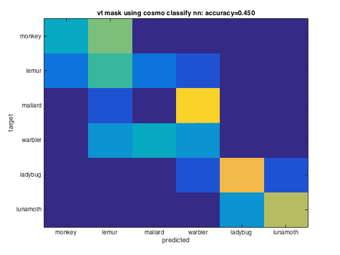
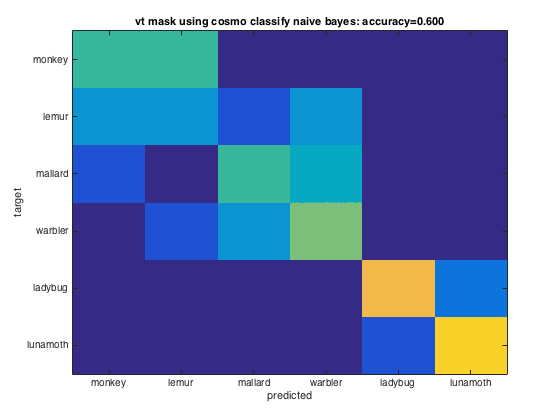
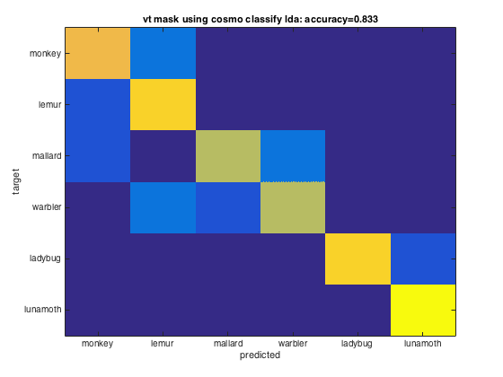
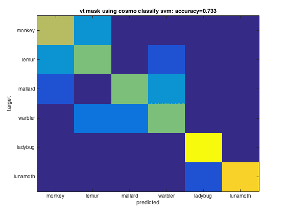
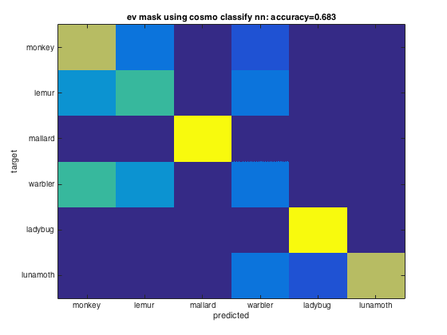
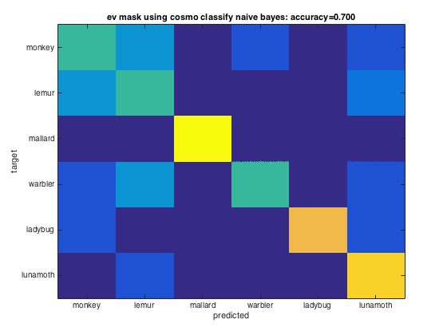
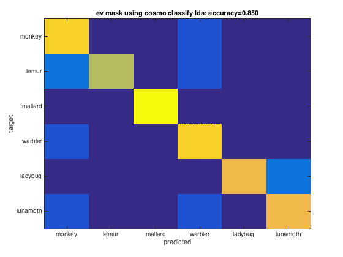
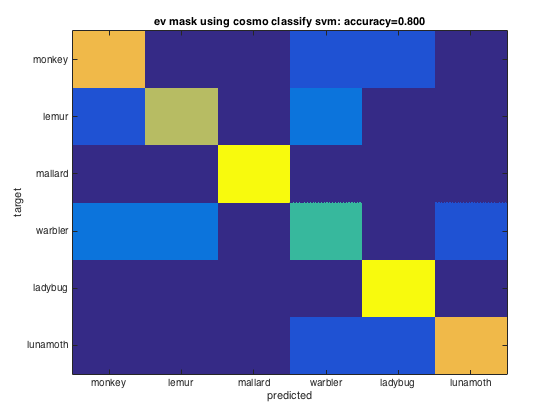

Demo: fMRI Region-Of-Interest (ROI) analyses
The data used here is available from http://cosmomvpa.org/datadb.zip
It is based on the following work: * Connolly et al (2012), Representation of biological classes in the human brain. Journal of Neuroscience, doi 10.1523/JNEUROSCI.5547-11.2012
Six categories (monkey, lemur, mallard, warbler, ladybug, lunamoth) during ten runs in an fMRI study. Using the General Linear Model response were estimated for each category in each run, resulting in 6*10=60 t-values.
- For CoSMoMVPA's copyright information and license terms, #
- see the COPYING file distributed with CoSMoMVPA. #
Contents
Set data paths
The function cosmo_config() returns a struct containing paths to tutorial data. (Alternatively the paths can be set manually without using cosmo_config.)
config=cosmo_config(); study_path=fullfile(config.tutorial_data_path,'ak6'); output_path=config.output_data_path; readme_fn=fullfile(study_path,'README'); cosmo_type(readme_fn); % reset citation list cosmo_check_external('-tic');
# # # ##### ######
# # # # # # # # ## ##### ##
# # # # # # # # # # # #
# # ### ##### ###### # # # # # # #
####### # # # # # # ###### # ######
# # # # # # # # # # # # #
# # # # ##### ###### # # # # #
Overview
--------
fMRI responses to viewing images of six species in the animal kingdom,
used in Connollly et al. 2012.
Contents
--------
- s0[1-8]/ This directory contains fMRI data from 8 of the 12
participants studied in the experiment reported in
Connolly et al. 2012 (Code-named 'AK6' for animal
kingdom, 6-species). Each subject's subdirectory
contains the following data:
- glm_T_stats_perrun.nii A 60-volume file of EPI-data preprocessed using
AFNI up to and including fitting a general linear
model using 3dDeconvolve. Each volume contains the
t-statistics for the estimated response to a one
of the 6 stimulus categories. These estimates were
calculated independently for each of the 10 runs
in the experiment.
- glm_T_stats_even.nii Data derived from glm_T_stats_perrun.nii.
- glm_T_stats_odd.nii Each is a 6-volume file with the T-values averaged
across even and odd runs for each category.
- brain.nii Skull-stripped T1-weighted anatomical brain image.
- brain_mask.nii Whole-brain mask in EPI-space/resolution.
- vt_mask.nii Bilateral ventral temporal cortex mask similar to
that used in Connolly et al. 2012.
- ev_mask.nii Bilateral early visual cortex mask.
- models
- behav_sim.mat Matlab file with behavioural similarity ratings.
- v1_model.mat Matlab file with similarity values based on
low-level visual properties of the stimuli.
Methods
-------
The stimulus-specific volumes in the stats T-stats file are in the order
monkey, lemur, mallard (duck), warbler, ladybug, lunamoth
for each of the ten runs.
Reference
---------
When using this dataset for any publication please cite:
Connolly, A. C. , Guntupalli, J. S. , Gors, J. , Hanke, M. , Halchenko, Y. O.,
Wu, Y. , Abdi, H. and Haxby, J. V. (2012). Representation of biological classes
in the human brain. Journal of Neuroscience, 32, 2608-2618.
[PDF] DOI: 10.1523/JNEUROSCI.5547-11.2012,
Contact
-------
Andrew C. Connolly <andrew.c.connolly |at| dartmouth.edu>
Example 1: split-half correlation measure (Haxby 2001-style)
%%%%%%%%%%%%%%%%%%%%%%%%%%%%%%%%%%%%%%%%%%%%%%%%%%%%%%%%%%%%%%% subject_id='s01'; mask_label='ev_mask'; data_path=fullfile(study_path,subject_id); % data from subject s01 % Define data locations and load data from even and odd runs mask_fn=fullfile(data_path, [mask_label '.nii']); % whole brain data_odd_fn=fullfile(data_path,'glm_T_stats_odd.nii'); ds_odd=cosmo_fmri_dataset(data_odd_fn,'mask',mask_fn,... 'targets',1:6,'chunks',1); data_even_fn=fullfile(data_path,'glm_T_stats_even.nii'); ds_even=cosmo_fmri_dataset(data_even_fn,'mask',mask_fn,... 'targets',1:6,'chunks',2); % Combine even and odd runs ds_odd_even=cosmo_stack({ds_odd, ds_even}); % remove constant features ds_odd_even=cosmo_remove_useless_data(ds_odd_even); % print dataset fprintf('Dataset input:\n'); cosmo_disp(ds_odd_even); % compute correlations ds_corr=cosmo_correlation_measure(ds_odd_even); % show result fprintf(['Average correlation difference between matching and '... 'non-matching categories in %s for %s is %.3f\n'],... mask_label, subject_id, ds_corr.samples);
Dataset input:
.samples
[ 1.77 3.61 4.28 ... 0.0628 0.708 1.02
1.3 3.05 3.9 ... 0.159 0.949 1.76
2.09 1.71 3.61 ... 0.908 0.468 1.34
: : : : : :
0.0247 1.82 2.18 ... 0.241 0.906 1.77
1.64 2.12 3.97 ... -1.32 0.985 0.221
2.08 2.72 3.18 ... -1.4 0.984 0.379 ]@12x298
.sa
.chunks
[ 1
1
1
:
2
2
2 ]@12x1
.targets
[ 1
2
3
:
4
5
6 ]@12x1
.fa
.i
[ 44 42 43 ... 43 40 41 ]@1x298
.j
[ 15 15 15 ... 16 19 19 ]@1x298
.k
[ 3 4 4 ... 13 13 13 ]@1x298
.a
.fdim
.labels
{ 'i'
'j'
'k' }
.values
{ [ 1 2 3 ... 78 79 80 ]@1x80
[ 1 2 3 ... 78 79 80 ]@1x80
[ 1 2 3 ... 41 42 43 ]@1x43 }
.vol
.mat
[ 3 0 0 -122
0 3 0 -114
0 0 3 -11.1
0 0 0 1 ]
.xform
'scanner_anat'
.dim
[ 80 80 43 ]
Average correlation difference between matching and non-matching categories in ev_mask for s01 is 0.467
Example 2: split-half correlation measure with group analysis
%%%%%%%%%%%%%%%%%%%%%%%%%%%%%%%%%%%%%%%%%%%%%%%%%%%%%%%%%%%%%%% subject_ids={'s01','s02','s03','s04','s05','s06','s07','s08'}; nsubjects=numel(subject_ids); mask_label='vt_mask'; ds_corrs=cell(nsubjects,1); % allocate space for output for subject_num=1:nsubjects subject_id=subject_ids{subject_num}; % Code from here is pretty much identical to that above >>> % set path for this subject data_path=fullfile(study_path,subject_id); % Define data locations and load data from even and odd runs mask_fn=fullfile(data_path, [mask_label '.nii']); % whole brain data_odd_fn=fullfile(data_path,'glm_T_stats_odd.nii'); ds_odd=cosmo_fmri_dataset(data_odd_fn,'mask',mask_fn,... 'targets',1:6,'chunks',1); data_even_fn=fullfile(data_path,'glm_T_stats_even.nii'); ds_even=cosmo_fmri_dataset(data_even_fn,'mask',mask_fn,... 'targets',1:6,'chunks',2); % Combine even and odd runs ds_odd_even=cosmo_stack({ds_odd, ds_even}); % remove constant features ds_odd_even=cosmo_remove_useless_data(ds_odd_even); ds_corr=cosmo_correlation_measure(ds_odd_even); % <<< identical up to here % set targets and chunks for the output, so that cosmo_stat can be used % below ds_corr.sa.targets=1; ds_corr.sa.chunks=subject_num; ds_corrs{subject_num}=ds_corr; end % combine the data from all subjects ds_all=cosmo_stack(ds_corrs);
samples=ds_all.samples; % get the correlations for all subjects % run one-sample t-test again zero % Using cosmo_stats ds_t=cosmo_stat(ds_all,'t'); % t-test against zero ds_p=cosmo_stat(ds_all,'t','p'); % convert to p-value fprintf(['correlation difference in %s at group level: '... '%.3f +/- %.3f, %s=%.3f, p=%.5f (using cosmo_stat)\n'],... mask_label,mean(samples),std(samples),... ds_t.sa.stats{1},ds_t.samples,ds_p.samples); % Using matlab's stat toolbox (if present) if cosmo_check_external('@stats',false) [h,p,ci,stats]=ttest(samples); fprintf(['Correlation difference in %s at group level: '... '%.3f +/- %.3f, t_%d=%.3f, p=%.5f (using matlab stats '... 'toolbox)\n'],... mask_label,mean(samples),std(samples),stats.df,stats.tstat,p); else fprintf('Matlab stats toolbox not found\n'); end
correlation difference in vt_mask at group level: 0.399 +/- 0.165, Ttest(7)=6.846, p=0.00024 (using cosmo_stat) Correlation difference in vt_mask at group level: 0.399 +/- 0.165, t_7=6.846, p=0.00024 (using matlab stats toolbox)
Example 3: comparison of four classifiers in two regions of interest
config=cosmo_config(); data_path=fullfile(config.tutorial_data_path,'ak6','s01'); data_fn=fullfile(data_path,'glm_T_stats_perrun.nii'); % Define classifiers and mask labels classifiers={@cosmo_classify_nn,... @cosmo_classify_naive_bayes,... @cosmo_classify_lda}; % Use svm classifiers, if present svm_name2func=struct(); svm_name2func.matlabsvm=@cosmo_classify_matlabsvm; svm_name2func.libsvm=@cosmo_classify_libsvm; svm_name2func.svm=@cosmo_classify_svm; svm_names=fieldnames(svm_name2func); for k=1:numel(svm_names) svm_name=svm_names{k}; if cosmo_check_external(svm_name,false) classifiers{end+1}=svm_name2func.(svm_name); else warning('Classifier %s skipped because not available', svm_name); end end mask_labels={'vt_mask','ev_mask'}; % nclassifiers=numel(classifiers); nmasks=numel(mask_labels); labels={'monkey', 'lemur', 'mallard', 'warbler', 'ladybug', 'lunamoth'}; nlabels=numel(labels); % little helper function to replace underscores by spaces underscore2space=@(x) strrep(x,'_',' '); for j=1:nmasks mask_label=mask_labels{j}; mask_fn=fullfile(data_path,[mask_label '.nii']); ds=cosmo_fmri_dataset(data_fn,'mask',mask_fn,... 'targets',repmat(1:6,1,10),... 'chunks',floor(((1:60)-1)/6)+1); % remove constant features ds=cosmo_remove_useless_data(ds); % print dataset fprintf('Dataset input:\n'); cosmo_disp(ds); % Define partitions partitions=cosmo_nfold_partitioner(ds); % print dataset fprintf('Partitions:\n'); cosmo_disp(partitions); % show result for each classifier for k=1:nclassifiers classifier=classifiers{k}; % get predictions for each fold [pred,accuracy]=cosmo_crossvalidate(ds, classifier, partitions); % get confusion matrix for each fold confusion_matrix_folds=cosmo_confusion_matrix(ds.sa.targets,pred); % sum confusion for each ground-truth target and prediction, % resulting in an nclasses x nclasses matrix confusion_matrix=sum(confusion_matrix_folds,3); figure imagesc(confusion_matrix,[0 10]) cfy_label=underscore2space(func2str(classifier)); title_=sprintf('%s using %s: accuracy=%.3f', ... underscore2space(mask_label), cfy_label, accuracy); title(title_) set(gca,'XTick',1:nlabels,'XTickLabel',labels); set(gca,'YTick',1:nlabels,'YTickLabel',labels); ylabel('target'); xlabel('predicted'); end end
Warning: Classifier matlabsvm skipped because not available
Dataset input:
.a
.vol
.mat
[ -3 0 0 121
0 3 0 -114
0 0 3 -11.1
0 0 0 1 ]
.xform
'scanner_anat'
.dim
[ 80 80 43 ]
.fdim
.labels
{ 'i'
'j'
'k' }
.values
{ [ 1 2 3 ... 78 79 80 ]@1x80
[ 1 2 3 ... 78 79 80 ]@1x80
[ 1 2 3 ... 41 42 43 ]@1x43 }
.sa
.targets
[ 1
2
3
:
4
5
6 ]@60x1
.chunks
[ 1
1
1
:
10
10
10 ]@60x1
.samples
[ 2.73 2.62 2.19 ... 0.669 1.78 2.42
2.51 2.99 3.25 ... 1.06 1.61 0.943
1.3 0.646 0.591 ... 1.51 1.75 3.08
: : : : : :
1.5 1.6 2.07 ... 0.491 1.1 1.78
2.56 1.28 2.11 ... 0.687 1.88 2.72
1 0.96 1.62 ... 2.86 4.04 4.28 ]@60x384
.fa
.i
[ 32 33 34 ... 28 29 29 ]@1x384
.j
[ 24 24 24 ... 25 25 26 ]@1x384
.k
[ 3 3 3 ... 9 9 9 ]@1x384
Partitions:
.train_indices
{ [ 7 [ 1 [ 1 ... [ 1 [ 1 [ 1
8 2 2 2 2 2
9 3 3 3 3 3
: : : : : :
58 58 58 58 58 52
59 59 59 59 59 53
60 ]@54x1 60 ]@54x1 60 ]@54x1 60 ]@54x1 60 ]@54x1 54 ]@54x1 }@1x10
.test_indices
{ [ 1 [ 7 [ 13 ... [ 43 [ 49 [ 55
2 8 14 44 50 56
3 9 15 45 51 57
4 10 16 46 52 58
5 11 17 47 53 59
6 ] 12 ] 18 ] 48 ] 54 ] 60 ] }@1x10
Dataset input:
.a
.vol
.mat
[ -3 0 0 121
0 3 0 -114
0 0 3 -11.1
0 0 0 1 ]
.xform
'scanner_anat'
.dim
[ 80 80 43 ]
.fdim
.labels
{ 'i'
'j'
'k' }
.values
{ [ 1 2 3 ... 78 79 80 ]@1x80
[ 1 2 3 ... 78 79 80 ]@1x80
[ 1 2 3 ... 41 42 43 ]@1x43 }
.sa
.targets
[ 1
2
3
:
4
5
6 ]@60x1
.chunks
[ 1
1
1
:
10
10
10 ]@60x1
.samples
[ 0.568 4.21 4.11 ... 3.18 2.37 0.473
1.45 4.33 4.86 ... 2.43 0.544 0.846
2.23 1.97 2.76 ... 1.5 -0.335 0.485
: : : : : :
-1.35 1.35 -0.116 ... -0.217 0.628 0.756
1.52 2.69 3.35 ... 0.898 -0.0235 0.102
0.457 1.23 2.67 ... -0.5 -0.215 1.67 ]@60x298
.fa
.i
[ 37 37 38 ... 40 40 41 ]@1x298
.j
[ 15 15 15 ... 16 19 19 ]@1x298
.k
[ 3 4 4 ... 13 13 13 ]@1x298
Partitions:
.train_indices
{ [ 7 [ 1 [ 1 ... [ 1 [ 1 [ 1
8 2 2 2 2 2
9 3 3 3 3 3
: : : : : :
58 58 58 58 58 52
59 59 59 59 59 53
60 ]@54x1 60 ]@54x1 60 ]@54x1 60 ]@54x1 60 ]@54x1 54 ]@54x1 }@1x10
.test_indices
{ [ 1 [ 7 [ 13 ... [ 43 [ 49 [ 55
2 8 14 44 50 56
3 9 15 45 51 57
4 10 16 46 52 58
5 11 17 47 53 59
6 ] 12 ] 18 ] 48 ] 54 ] 60 ] }@1x10
        Show citation information
cosmo_check_external('-cite');
If you use CoSMoMVPA and/or some other toolboxes for a publication, please cite: J. Shen. NIFTI toolbox. available online from http://www.mathworks.com/matlabcentral/fileexchange/8797-tools-for-nifti-and-analyze-image C.-C. Chang, C.-J. Lin (2011). LIBSVM: a library for support vector machines. ACM Transactions on Intelligent Systems and Technology, 2:27:1--27:27, 2011. LIBSVM toolbox available online from https://github.com/cjlin1/libsvm N. N. Oosterhof, A. C. Connolly, J. V. Haxby (2016). CoSMoMVPA: multi-modal multivariate pattern analysis of neuroimaging data in Matlab / GNU Octave. Frontiers in Neuroinformatics, doi:10.3389/fninf.2016.00027.. CoSMoMVPA toolbox available online from http://cosmomvpa.org The Mathworks, Natick, MA, United States. Matlab 8.5.0.197613 (R2015a) (February 12, 2015). available online from http://www.mathworks.com